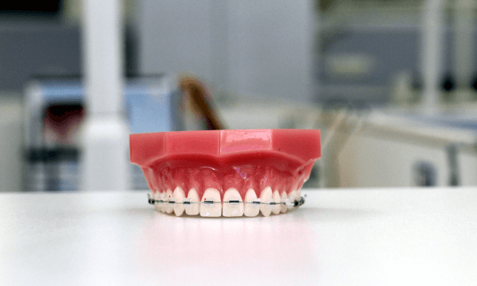

What are Dental Braces ?
Dental Braces are devices that are placed directly on or behind your teeth to solve one or more orthodontic problems:
1) Crowded or crooked teeth
2) Overbites or Underbites
3) Incorrect Jaw Position
4) Jaw disorders
5) Smile Correction
6) Optimal Teeth Alignment
7) Teeth Straightening
8) Teeth Irregularities
Getting braces will help you chew/bite properly, prevent tooth decay, gum diseases, tooth loss, abnormal wear of tooth enamel, overcome jaw problems, smile better and become confident.
What is ideal age for getting Dental Braces ?
An ideal age depends on the individual, generally, people between 12-13 years of age benefit more than elders. Your dentist can diagnose and suggest you if the braces are good for you or not. Adults, who have crossed the ideal age or growing age, may require dental surgery to solve their orthodontic issues, along with the help of braces.
How do braces look like ?
Braces are simple orthodontic devices, usually made up of plastic, ceramic, metal or advanced invisible materials. There different types of braces, your orthodontist will suggest/recommend you the right type of braces.
Fixed Braces
These are non-removable braces, usually implemented when there are a lot of teeth that need to be corrected or when treatment needs to be accurate to prevent future complications. Fixed dental braces are available in metal, ceramic and clear plastic.
Removable Braces
These are used to correct minor teeth problems or to prevent children from sucking thumb. As the name says, these could be removed when not required and should be used as per doctors instructions.
Functional Appliances
These are used to correct jaw problems. You may need to remove these while eating, please contact your doctor and follow the instructions properly.
Retainers
These are teeth straighteners, used to correct the teeth alignment after you initials braces treatment is finished. Your dentists may recommend, you these as required based on your diagnosis and treatment results.
How many days or months I will have to wear Dental Braces?
The treatment time depends on many factors, your orthodontist will help you with this during your course of treatment. Usually, most patients may have to wear braces for 12-24 months depending on the complexity of the issue and your treatment response. But do not worry, the dentist will help you with the process and will try to reduce the timeline.
How much do braces cost?
Dental braces costs depend upon the type of braces used for treatment. At MaxiDent dental hospital, we ensure affordable dental braces for our patients and help you chew, bite and smile better. Depending on the type of material used and aesthetics and comfort offered, the braces pricing will differ.
Traditional Braces / Conventional Braces:
These are made up of stainless steel, with metal brackets attached to each tooth using cement. The metal brackets are attached using archwire or sometimes using tiny elastics called as self-aligners.
Cost: Most Affordable
Comfort: Not much comfortable due to the presence of metal wires.
Look: Traditional braces are visible to eye contact, hence they may not look good if you are concerned about aesthetics.
Ceramic Braces:
These are made up of clear and transparent material usually that mix up with your teeth colour. Ceramic braces work in the same way as stainless steel braces.
Cost: Affordable, as we have our in-house lab to make custom braces.
Comfort: More comfortable, compared to stainless steel braces.
Look: They usually mix up with your tooth colour, they are not noticeable unless people stare at you for a long time.
Damon Braces
These are popular as it requires fewer visits to your dentists and less painful compared to others.
Cost: Slightly Expensive
Comfort: Very Comfortable, saves your money as you require fewer visits.
Look: They look similar to traditional steel braces, however, they have the added flexibility to adjust and align teeth. They greatly reduce treatment time.
Lingual Braces
These are the same traditional stainless steel brace, that is put on top of your teeth. The difference is the lingual braces are put behind your teeth, thus hiding them from people who watch you.
Cost: Moderate
Comfort: They add the same level of comfort as stainless steel braces.
Look: Compared to traditional braces, these braces though works in the same way. They are hidden behind your teeth, hence they are not much noticeable.
However, the lingual braces are not for everyone, your dentist will recommend the right braces after the diagnosis required for treatment.
Invisalign
These are clear braces, made up of plastic teeth aligners. These are custom made for your teeth, they are removable and almost invisible to the naked eye. Hence the name Invisalign – means invisible aligners.
You can remove them easily, clean them and put them back in the mouth yourself without any dentist visits. Every two weeks or as per the schedule, you will get a new set of invis-aligners to replace the old one. In this manner, the treatment is continued as long as required to correct your orthodontic defects. The treatment with Invisalign may take longer in some cases as they are used to align teeth in stages.
The best part is, you can eat and drink whatever you want when you are using invisible braces. However, these are not for everyone, if the treatment complexity requires permanent or fixed braces; your dentist may not recommend you invisible brackets.
Cost: Expensive
Comfort: Most comfortable, when compared to various other teeth braces.
Look: They are not visible, hence you do not have to worry or shy about what people will say about your smile and teeth.
Are dental braces painful?
They may be painful for some people depending on their case, however at MaxiDent Dental Hospital our team of doctors will be gentle with treatment and make sure that it is a painless experience for you in most cases.
What care should I take, if I am wearing braces?
First thing, you must do is to follow the doctor’s instructions without skipping. Avoid starchy and sugary foods and any other items your doctor might instruct to avoid.
If you are wearing removable braces, clean them as per the instructions by the doctor as scheduled. Gargle and clean your teeth regularly to avoid any tooth decay. Follow the medicine course, if any recommended by your dentist without fail.
When do my braces are removed?
After the treatment is finished, and results are visible the braces are removed. Usually, an X-Ray will be taken to recheck if anything is missing.
After removing your braces, the dentist may recommend you retainers, to improve teeth alignment, depending on your age and reports. Generally retained dental braces are recommended for growing children until they attain an age where dental alignments will be fixed.
Am I too old for braces? Can adults undergo dental braces treatment?
Improved science and technology is helping adults to wear braces to correct the teeth or jaw issues. However the treatment results and timeframe will vary as an adult, the results could be achieved with a combination of a jaw or maxillofacial surgery along with treatment with dental brackets. If you want to find out if dental braces can help you at your current age, please make an appointment with us today for an evaluation.
Can I play sports, while wearing braces?
You must be careful doing physical day to day activities when wearing braces. A special mouth guard may be required for some activities to stay protected and avoid being hurt in sports. Talk with your doctor to get more information on precautions to be taken while playing sports.
How do I get ready for teeth braces treatment?
When you are ready for getting braces, please do the following:
Clean your teeth: If your teeth are not properly cleaned, your dentist may have to clean them before cementing and fixing the dental braces. Cleaning your teeth prior to orthodontist visit will speed up the treatment process. If you have a history of dental problems in the past, regular professional dental cleaning is highly recommended. At MaxiDent Dental Hospital, we do professional cleaning all around the year. Book an appointment anytime.
Expect some discomfort:
Depending on the type of braces used, you may or not experience discomfort. However, we recommend taking the medication provided in the prescription properly until your mouth adjusts to the changes. Eat soft food during the first week or 3 days and drink non-sugary fluids.
Sometimes, tooth extraction may be required for fitting braces as required, in such cases, additional medications and instructions are to be followed carefully to void any discomfort.
Our Patients Speak, Read what they are saying.
I got my wisdom tooth removed. They have advanced equipment which gives you no pain at all. thank you.. Over all a good experience..
- Neeraj Vemula
The result for my treatment is amazing in this hospital. I like the way how doctor treated me.
- Sameer Samal
Im very happy to visit maxident dental hospital I have done root canal treatment...dr.rajesh is very professional..nice ambience
- Tanuja Krishnamurthy
I am so happy with care took by the doctor, root canal treatment and cap placement was nice.
- Neha Bansal
Excellent in every way! I felt very comfortable here with Dr , lovely relaxed atmosphere and great service. Will continue to use maxi. Thank you!
- Sahithi Manodra